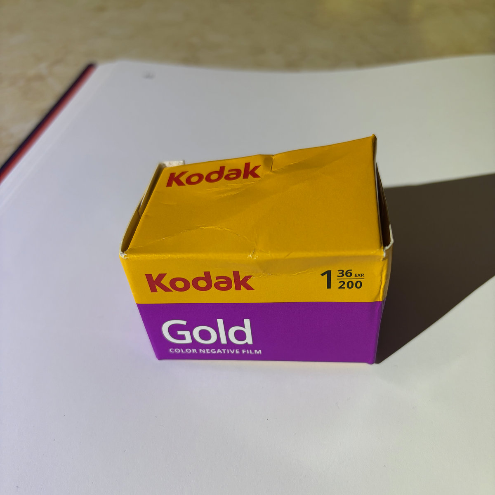

Published Work
Kodak Gold 200
2026-10-14 外拍活动NO.017 | 芦墟古镇·胶片版
关于柯达胶卷
我最喜欢用柯达胶卷拍摄彩色照片。
这些年，我用过不少柯达胶片，包括正片、负片和黑白底片。家里积攒的底片中，有一大半是柯达胶卷。对我来说，柯达早已成为这些摄影记忆的一部分。偶尔翻看这些底片，那些画面总能带我回到许多美好的记忆里。
如今，数码摄影的浪潮席卷而来，我心底仍留着一处，装着对胶片的热爱。我想，胶卷，我还没玩够。
ENGLISH
Kodak Film
Kodak film is my favorite choice for color photography.
Over the years, I have used quite a few kinds of Kodak film, including slide film, color negative film, and black-and-white film. More than half of the negatives at home are Kodak. For me, Kodak has long been part of these photographic memories. Every now and then, when I look through those negatives, the images bring back so many happy memories.
Even as digital photography surges around us, I still keep a corner of my heart filled with a love for film. I guess I'm not done with film just yet.